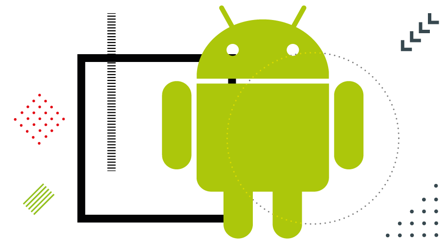

Here are some links to the Codelabs to start your journey in Google Technologies
Machine Learning
Learn how to increase user engagement and retention with intelligent apps
that can efficiently provide users what they need with minimal effort
by giving these systems the capacity to learn and grow from experience
without having to be explicitly designed.

Android Development
Every year, Google updates the world's most popular operating system with intriguing new features.
We hold workshops on a regular basis to
keep you up to date on the newest trends in Android development.
Web Development
Learn the fundamentals of creating a pleasurable web experience for both users and developers.
Keep up with the newest and most popular technologies. Get access to a
hands-on coding experience that includes a guided lesson.
Cloud Computing
For developers who want to stay relevant in a cloud-first world
where organizations expect agility and creativity, as well as the rapid
emergence of cloud-native applications to bridge
the gap between data, insight, and action.
Data Analytics
Google Analytics has tools to assist users spot patterns and trends
in how visitors interact with their websites. Data gathering,
analysis, monitoring, visualization, reporting, and integration
with other applications are all possible with the features.